Chap 3. Rego
Contents
- Rego Overview
- Rego Grammar Visualization via Rail Load Diagram
- Rego Grammar Detail
This chapter describes Rego, a dedicated language used by OPA to write policies. The Rego language is a rule-driven language that is optimized for describing policies, and has different characteristics from the general-purpose programming language. We visualize the grammar of the Rego language as a rail diagram and elaborate one by one. Understanding the Rego language will allow us to understand how OPA abstracts policies into code.
Rego Overview
Rego is a dedicated language used by OPA to describe policies. The official website tells us that it is correct to pronounce Rego as ray-go. However, this book, like OPA, continues to mark it as Rego. For more information on Rego, see https://www.openpolicyagent.org/docs/latest/policy-language/ for official documents.
The official website indicates that Rego is an extension of Datalog, an old Prolog-based data processing language with JSON support. The reason why it differs greatly from general-purpose programming languages such as C/C++ and Java is because it is a prologue-based language. If you look at the explanation on the official website, Rego looks like an extension of the datalog, but if you look at the actual datalog grammar, it is completely different. The Rego side is highly readable to developers who are familiar with the existing general-purpose programming language.
Although there is a large difference between datalog and grammar, there is a fundamental commonality of the language centered on rules. Although the datalog does not need to be learned to easily understand Rego because the datalog themselves are rather difficult for users who are not familiar with them, interested readers may want to learn them when they can afford to.
For readers curious about the grammar of the datalog, take a look at the presentation at https://www2.cs.duke.edu/courses/fall16/compsci516/Lectures/Lecture-21-Datalog.pdf
Consider the relationship between OPA and Rego. Since both input and data from OPA can be freely written in JSON form, only Rego can be given special meaning in OPA. When OPA is defined from a technical perspective, it can be viewed as a toolbar that provides APIs, frameworks, and runtime for making good use of Rego, focusing on policy engines for performing policies written in Rego. OPA waits after loading the data files referenced by the rules and rules defined as the Rego file. Then, upon requesting an evaluation with inputs, OPA evaluates the rules defined in the Rego files and reflects the evaluation results. The results of these assessments can be inquired through the OPA.
The Rego language lists the rules for defining policies. These rules themselves can be seen as declarations of rules rather than code that is actively enforced. When the OPA engine evaluates this rule based on its input, the resulting value of the rule is defined. The part described in the Rego language is the logic by which the resulting value of the rule is defined. When compared to the RDBMS concepts, Rego is most similar to a view. In RDBMS, if you create a table and create the join query as a view, the results of querying the view will change if the data in the table used for join changes. Similarly, changing the input value while the rule is loaded and evaluating the rule again will change the value of the rule.
In a typical programming language, variables, functions, and controls are the main components, but in Rego, rules are the main components. Functions are only part of the rule, and controls such as if, while/for, break/continue, and goto are not found. It is important to understand that OPA queries the evaluation results after evaluation of the rules according to the input.
Rego Language Grammar Overview
The exact grammar of the Rego language can be viewed by accessing the OPA website and clicking on [Core Doc] -> [Policy Reference] -> [Grammers] as follows. The OPA grammar follows the EBNF(Extended Backus Naur Form) format, which is a slightly extended version of the BNF(Backus Naur Form) format, which is widely used to express the grammar of programming languages, and is the same as the ISO standard format (except that sentences end in semicolons in ISO format). The website seems to have omitted the semicolon for aesthetic reasons.
OPA grammar expressed in EBNF(ISO format) 3
3 Source: https://www.openpolicyagent.org/docs/latest/policy-reference/#grammar
You don't have to understand the whole grammar now, and a glance at the whole framework is enough for now. Let's not feel too burdened now because later in chapter 3 we will explain each part with the grammar.
However, it is not possible and inefficient to express everything in a programming language with only syntax, so there is a semantic part that does not appear in grammar. For example, in arithmetic operations, it is usually not grammatically shown that dividing by zero is inappropriate. A more precise declaration of grammar can be defined as nonzero and can be expressed as EBNF, but all of these can be semantically examined in execution rather than grammatically, preventing problems where grammar becomes too complex and syntax interpretation takes too long. Conversely, if we define grammar too simply and focus on semantic aspects, it will be difficult to properly inform users of the language's expressive power.
Railroad Diagram
It is not easy to understand the EBNF grammar of OPA itself, so let's convert it to a more comprehensible form. Railroad diagrams are widely used as a way to make EBNF easier to understand. Many readers will be familiar with the Railroad diagram because it is used a lot when schematizing regular expressions. In this book, the https://bottlecaps.de/rr/ui website was converted to a Railroad diagram. However, the https://bottlecaps.de/rr/ui site was converted to the W3C format as follows, as EBNF on the OPA's official website uses the W3C format differently from the ISO format.
OPA grammar expressed in EBNF(W3C format)
The difference between ISO EBNF format and W3C EBNF format in OPA grammar is similar except that = replaced by this ::=, {} replaced by ( )*, and [ ] replaced by ( )+, which means optional. Please refer to the OPA grammar written in W3C EBNF format as the source code chap3/rego_bnf_w3c.txt.
Try converting OPA grammar to a rail diagram: https://bottlecaps.de/rr/ui, click the Edit Grammer tab, select the file, click Load, or open it as an editor to copy the contents of the chap3/rego_bnf_w3c.txt file to see the following in Figure 3-1.
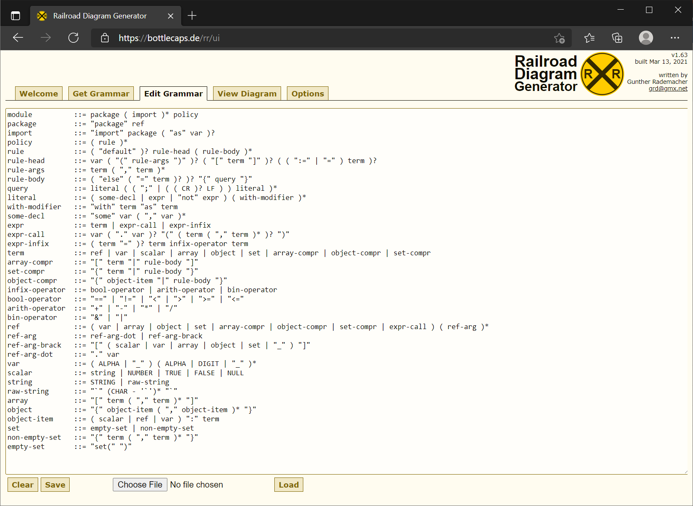
Figure 3-1. Loading OPA Grammar on https://bottlecaps.de/rr/ui
Then click the [View Diagram] tab to view the railroad diagram of the OPA grammar as shown in Figure 3-2.
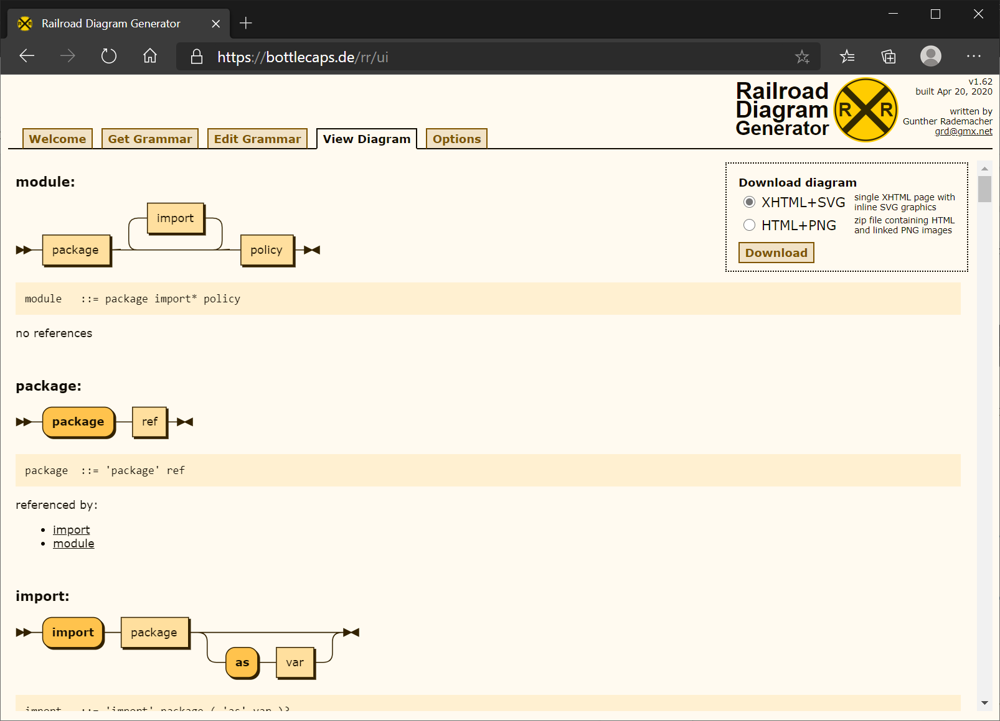
Figure 3-2. Railroad Diagram of OPA Grammar
Click Download at the top to create the file in the desired form and download it as a zip compressed file. Select and download HTML+PNG, extract it, and open index.html in a browser for easy local references. Click on the referenced section or the label of a diagram item to easily explore the associated content. It would be easier to understand if you read the latter part of chapter 3 and refer to the diagram together.
Rego Module
Let's take a closer look at the grammar of the Rego module.
Module
The top unit of Rego is the module. One Rego file can be viewed as one module. The railing diagram of the module shows Figure 3-3.
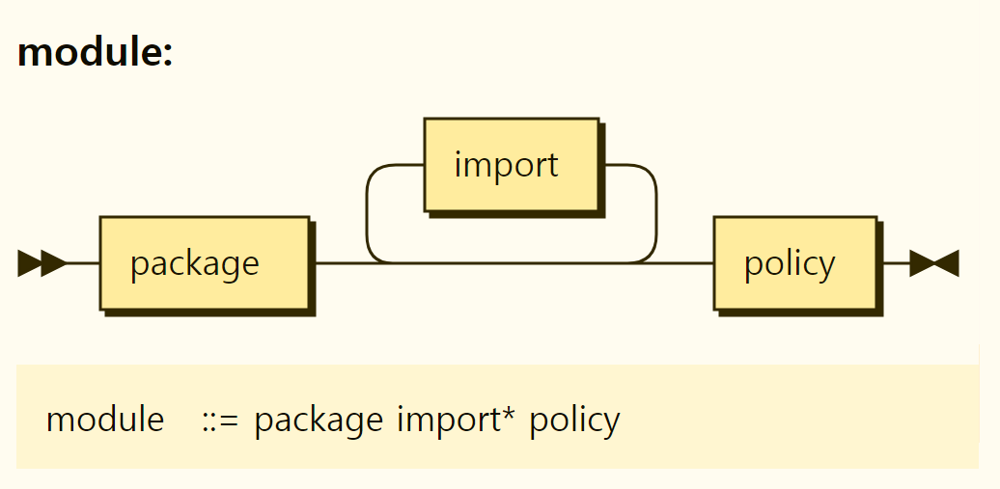
Figure 3-3. Structure of the Module
The railroad diagram shows that the module consists of a package declaration, an import policy for an arbitrary number of modules (which may not exist). Unscramble the contents of Figure 3-3, the module consists of packages and policies, and can have import statements to include the contents of other modules.
The modules in OPA are similar to modules in general-purpose languages such as Go, but can be seen as policies instead of code, and the policies themselves can be viewed as code, so it is almost identical to modules in general-purpose languages. Package Let's look at the package declaration this time. A package declaration consists of a keyword package and a name that can be referenced by other modules, as shown in Figure 3-4.
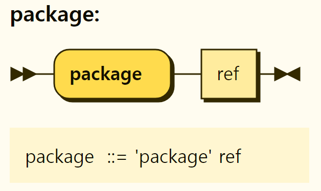
Figure 3-4. Structure of Package Declaration
A package declaration is similar to a package declaration in a typical programming language, for example:
package hello
It can also be used to represent a hierarchy using .
package hello.test.p1
Declared packages are used to isolate different modules when loading the contents of that module, and different package names can have different namespaces, so variables with the same name and functions can exist in different packages.
Import
Imports are used to import and use modules from other Rego files. Import has the form of import
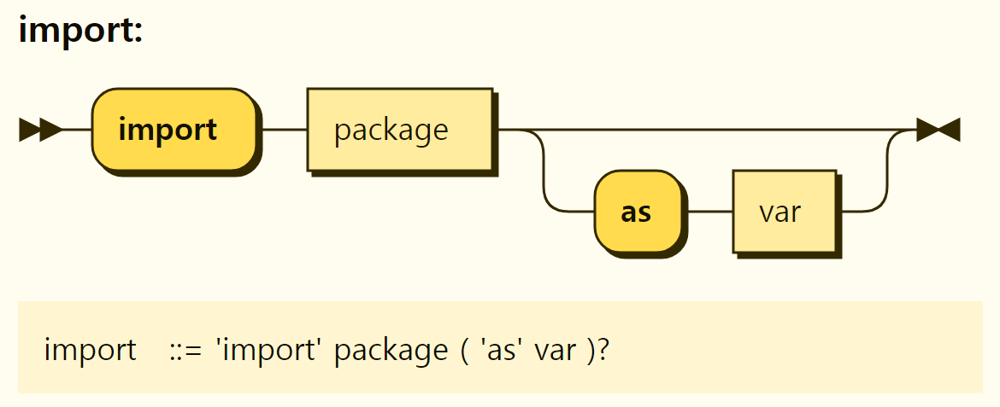
Figure 3-5. Structure of the Import
For example, the following declaration brings up the contents of a module called data.test.example.
import data.test.example
When referencing a module within a file, it can only be referenced using the last part of the module's name if the last part does not have the same module. The data.test.example imported from the above example can be referenced as a sample.
If you want to use a package imported from within the module under a different name, you can give it a different name using the as statement. It can also be used to facilitate the use of modules with the same last part without a full module reference name. For example, if you import two modules: data.test.example and data.run.example, you can use an as statement to refer to data.test.sample as dtexample, data.run.sample as drexample.
import data.test.example as dtexample
import data.run.teample as drexample
Imports are primarily used to load modules that store policy data.
Policy
A policy consists of an arbitrary number of rules, as shown in Figure 3-6. In extreme cases, you may not have any rules, but it is not practical to create a module that does not have any rules, so this case is unlikely to be seen. For the purpose of a placeholder that pre-books the package names of parts that users can redefine and use in the future, it seems that there can be a file consisting only of comments without rules.
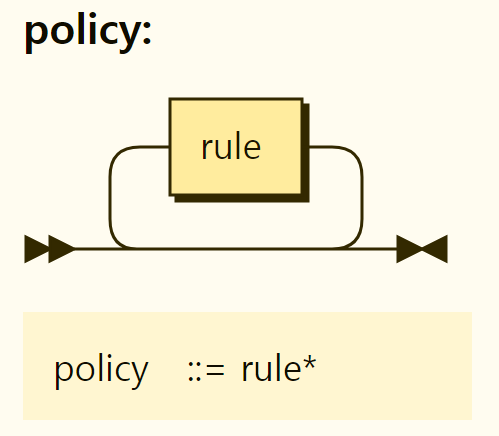
Figure 3-6. Structure of Policies
The OPA official document describes the rule before the module. However, the reason for first describing the module in this book is to emphasize that almost everything is a rule in Rego. When you listen to the explanation of the OPA official document, there are a lot of confusing parts that seem to be rules, but not rules in some areas, and let's first think of these as rules.
Term
Before we take a closer look at the rules, let's look at the term, a basic element of the Rego language. Terms can be seen as basic data structures representing data in the Rego language. The term consists of a comprehensive set of references, variables, scalar values, arrays, objects, sets, etc., array comprehensions, object comprehensions, and set comprehensions, as shown in Figure 3-7. First, let's look at the basic data structures except for variables and references.
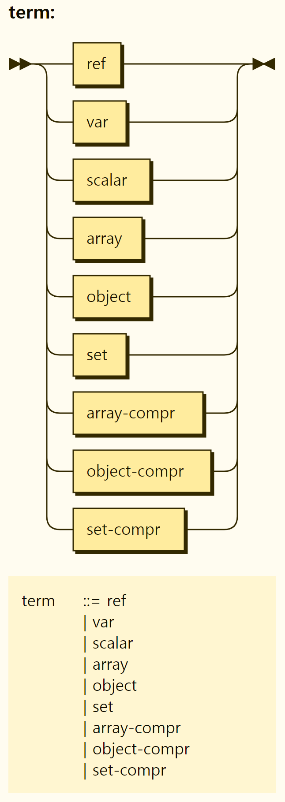
Figure 3-7. Structure of Terms
Scala Value
Rego's scalar value represents a simple value that is not grouped into complex values and can be of string, number, boolean, or null type. Both strings and numbers are identical to the JSON type (i.e., JavaScript type). The structure of scalar values is shown in Figure 3-8.
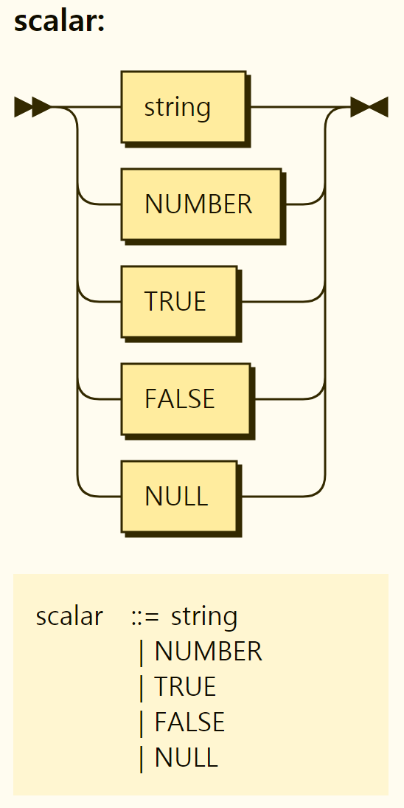
Figure 3-8. Structure of scalar values
An example of allocating scalar values is shown below.
s : = “hello, world”
num := 5
exists := false
ret := null
Number
Since the number has the same type as the Java script, there is no type distinction between an integer and a floating point, so even if treated as an integer, minimal space is needed to store the exponent. Therefore, let us note that the integer representable range is slightly narrow compared to the typical programming language. Based on 64 bits, the number of integer digits that can be expressed is about three digits smaller.
String
There are two types of strings in Rego, a regular string and a raw string, as shown in Figure 3–9.
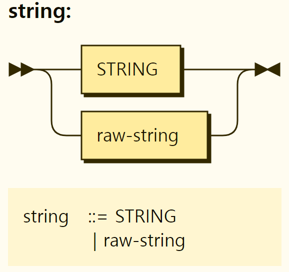
Figure 3-9. Structure of the string
A regular string is a string surrounded by "" (double quotes). \t (tab), \n (new line), etc. in double quotes are recognized as special characters, such as typical programming languages. For example, if you output the following string, World is displayed on the next line of Hello.
“Hello\nWorld”
A raw string is a string surrounded by a (backtick, located to the left of the number key 1 on the keyboard), as shown in Figure 3-10. Unlike regular strings, it is displayed as it is except for itself. For example, \t represents a tab-special character in a normal string, but remains \ and t characters in the raw string.
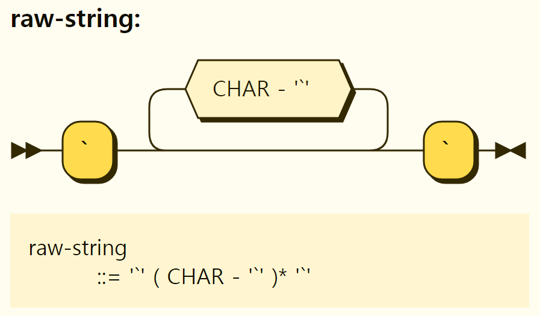
Figure 3-10. Structure of the raw string
For example, if we output the following string, Hello\nWorld will be displayed as it is.
`Hello\nWorld`
Composite Value
A composite value has the form of an object, array, set, etc.
Object
First of all, objects are easy when you think of JSON objects. The structure of the object is repeated by separating the object entries into , between {}, as shown in Figure 3-11. Object entries are in the form of a
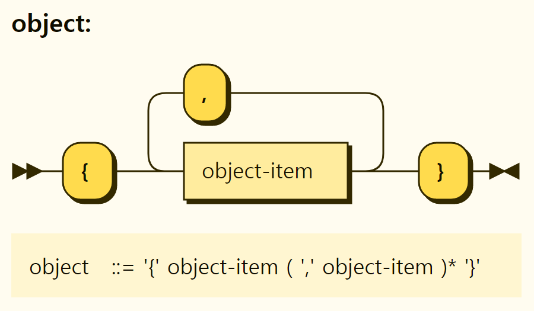
Figure 3-11. Structure of the objects
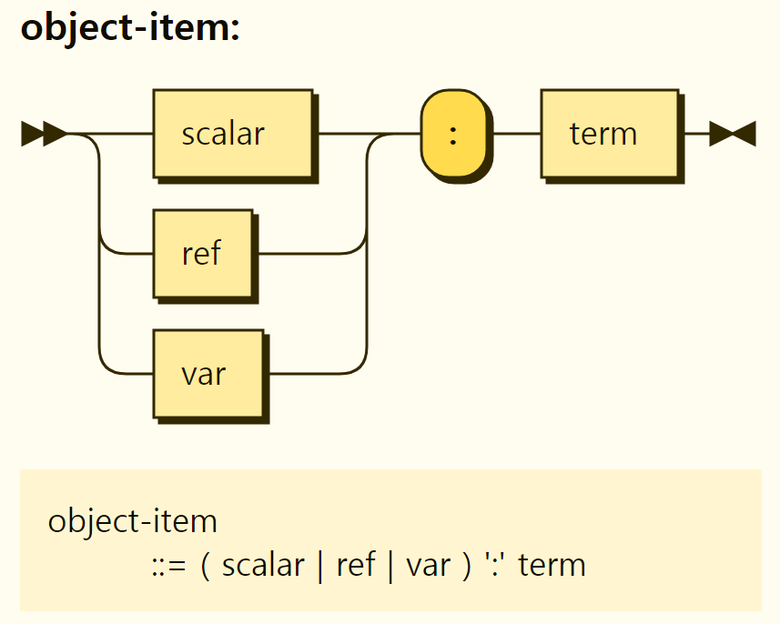
Figure 3-12. Structure of object items
In Rego's EBNF grammar, at least one pair of
The exact grammar of the object is expected to be object ::= '{' ( object-item ( ',' object-item ) )? '}' in Figure 3-13 rather than object ::= '{' object-item ( ',' object-item ) '}' in Figure 3-11. In addition, {} can be mistaken for representing an empty set, which in Rego is represented as a set(). The name of the type can be found by calling the type_name function described in Chapter 4, which returns "object".
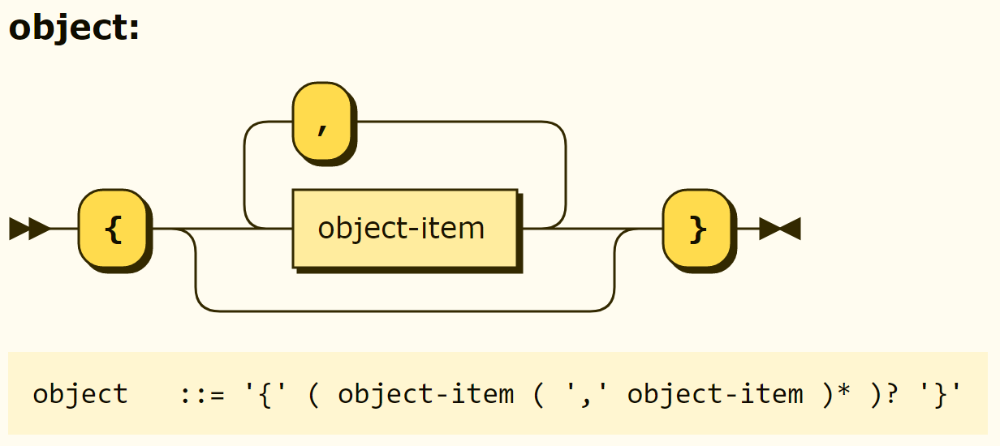
Figure 3-13. Accurate Structure of objects
> type_name({})
“object”
> type_name(set())
“set”
An object consists of keys and values, and it is also possible to include objects or other complex values as its values. The difference is that JSON can use scalar values, references, or variables, unlike using only strings as keys.
Like JSON, the value of an object can be any other composite value. Thus, it is also possible for objects to be nested in multiple levels with values within the object.
{
“name1”:”value1”,
“object”: {“prop1”:”value2”, “prop2”,”value3”}
}
It can also be used as a value for an object by referring to the value assigned by the value assignment as follows. Value assignment will be discussed in more detail in the rules section
red := “FF0000”
{“color”:red, “size”:270}
The equality between objects can be compared to each other. The following comparisons result in a return of true because the values of the objects are practically the same.
{“name1”:”value1”, “name2”:”value2”} == { “name2”:”value2”, “name1”,”value1”}
Array
Arrays are ordered by a set of terms, such as values and references, and can be referenced by an index. An array is represented by elements surrounded by [] and separated by ,.
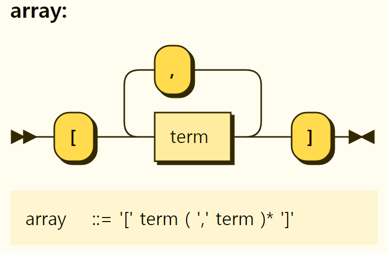
Figure 3-14. Structure of an array
If an array of strings has been assigned under the name numbers as shown below, the entries in the array can be referenced in the form numbers[0], numbers[1].
numbers := [“zero”, “one”, “two”, “three”, “four”]
If you attempt to refer to a negative number or a value greater than the actual index of the array, an undefined ref error occurs because the reference target is not defined.
Empty arrays can also be declared as follows, but Rego's EBNF grammar states that at least one element is needed.
empty_array := [ ]
This appears to be an error in EBNF grammar posted on the OPA website. Also, the correct grammar would be array ::= '[' ( term ( ',' term ) )? as shown in Figure 3-15, not array ::= '[' ( term ( ',' term ) )? ']' as shown in Figure 3-14.
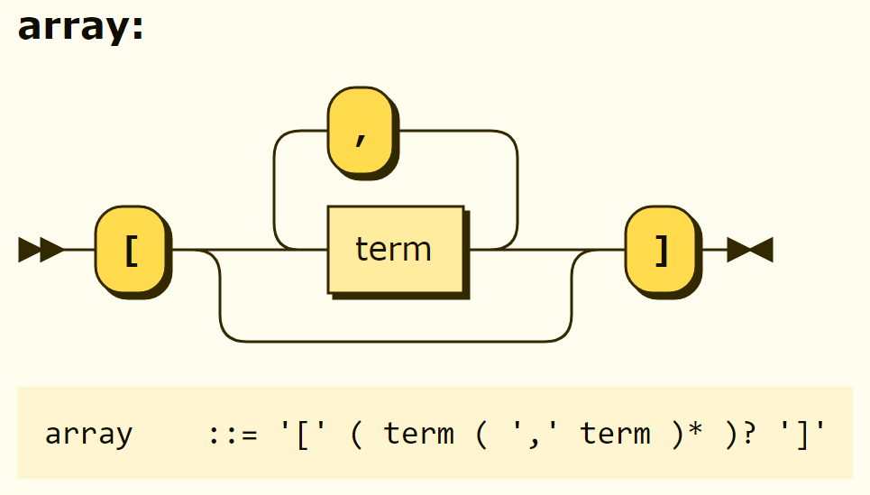
Figure 3-15. Accurate structure of an array
Set
A set is a complex value consisting only of terms without a key. Unlike arrays, there is no order and only one duplicate value is stored. There are two sets, empty set and non empty set, as shown in Figure 3-16.
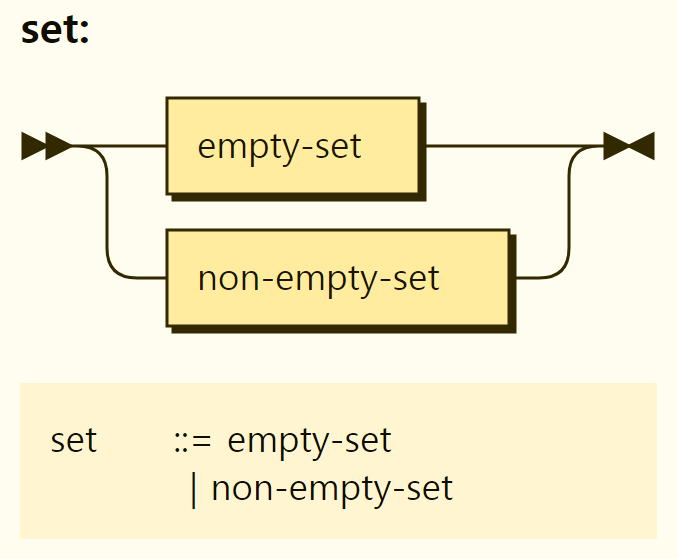
Figure 3-16. Structure of the set
An empty set is represented by set(), not by {}, as shown in Figure 3-17. Since {} means an empty object without a
empty_set := set()
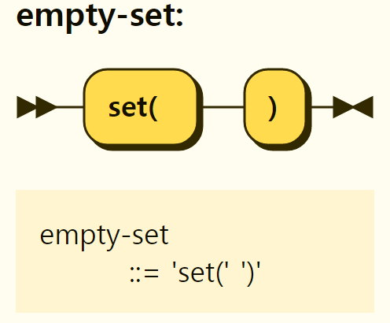
Figure 3-17. Structure of an empty set
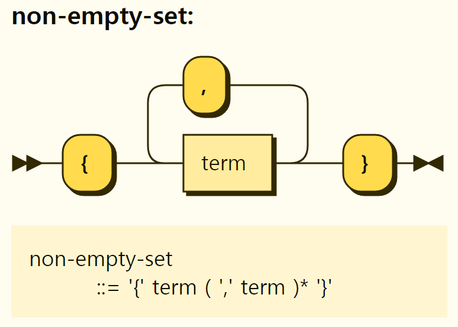
Figure 3-18. Structure of a non-empty set
If it is not an empty set, the underlying elements are separated by , and surrounded by {}, as shown in Figure 3-18. The following is a collection of frequently used encodings for Korean language.
encodings := { “euc_kr”, “cp949”, “utf-8” }
Since there is no order in the set, it is judged that the values being constructed are the same with different orders considered as the same set. Because the set treats duplicated items as one, it becomes true not only when the order is different, but also when:
> {1,2,3} == {2,2,3,3,1,1,1}
true
If you type {2,2,3,3,1,1} in Repl, you can see that it is actually stored as {1,2,3}.
Comprehension
You will occasionally encounter comprehension when learning programming languages or mathematics. Rego has three types of comprehension. In mathematics, a comprehension may be easy to understand if you think of such a form of expression as {x | x is an integer greater than 3 } and so on.
Object Comprehension
An object comprehension represents the rule that the
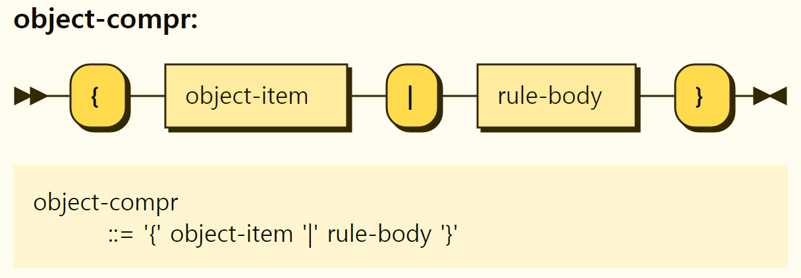
Figure 3-19. Structure of object comprehension
Let's look at an example of object comprehension. Let's enter the following code in REPL.
$opa run
OPA 0.19.2 (commit 40f9c1fe, built at 2020-04-27T22:51:13Z)
Run 'help' to see a list of commands.
> fruits := ["banana", "apple", "pineapple"]
Rule 'fruits' defined in package repl. Type 'show' to see rules.
> strlength := { st : count(st) | st = fruits[_] }
Rule 'strlength' defined in package repl. Type 'show' to see rules.
> strlength
{
"apple": 5,
"banana": 6,
"pineapple": 9
}
First, we created an array called fruits with three items: banana, apple, and pineapple. An object called strlength was then declared as an object comprehension, with the key st and the value count function to return the length of the string. The rule part of the comprehension st = fruits[_] iteratively assigns each element of the fruit array to st as it travels. In the last line, the contents of the object were printed by inputting strlength from the REPL. As a result, it can be seen that an object is created in which an item in the fruit array becomes a key and the string length of the key becomes a value.
Set Comprehension
A set comprehension declares a set by expressing the rules that the set must satisfy. The structure of the set comprehension is shown in Figure 3-20 and has the form of {
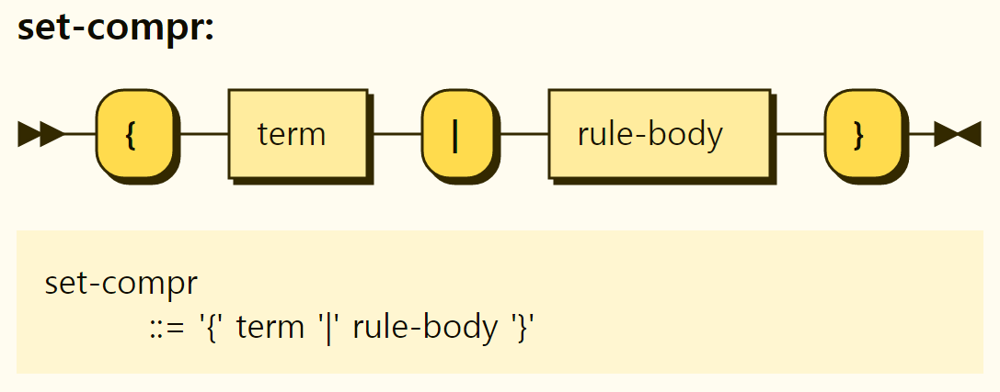
Figure 3-20. Structure of the set comprehension
Let's look at an example of a collective formula. Let's enter the following code in REPL.
$opa run
OPA 0.19.2 (commit 40f9c1fe, built at 2020-04-27T22:51:13Z)
Run 'help' to see a list of commands.
> fruits := ["banana", "apple", "pineapple"]
Rule 'fruits' defined in package repl. Type 'show' to see rules.
> under7char := { st | st = fruits[_]; count(st) < 7 }
Rule 'under7char' defined in package repl. Type 'show' to see rules.
> under7char
[
"banana",
"apple"
]
First, we declare the same array of fruits that we declared in the object comprehension. Then, in the set comprehension, we declare the items to be included in the set as st, and iteratively substitute them as we traverse the items of fruits in st. Subsequent semicolons are used to distinguish rules and specify a rule that the string length of st is less than 7. When multiple rules are used together in the body of rules, both and conditions must be satisfied. The output of the result under7char then shows a set of missing pineapple with string length greater than 7.
Under7char is a set although it is surrounded by []. In an array, "banana" should be output when under7char[0] is entered, but an error occurs, and when under7char["banana"] is entered, "banana" is outputted.
> under7char[0]
1 error occurred: 1:1: rego_type_error: undefined ref: data.repl.under7char[0]
data.repl.under7char[0]
^
have: 0
want (type): string
> under7char["banana"]
"banana"
>
Array Comprehension
An array comprehension declares an array by expressing the rules that the array must satisfy. The structure of the array comprehensive expression is shown in Figure 3-21, and has the form of [
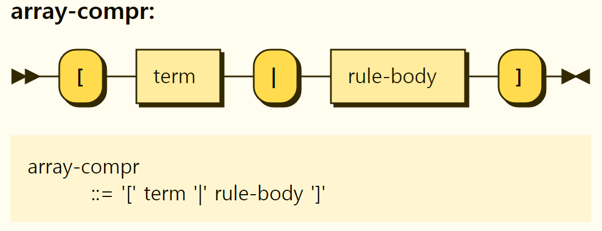
Figure 3-21. Structure of the array comprehension
Let's look at an example of an array comprehension. Let's enter the following code in REPL.
$opa run
OPA 0.19.2 (commit 40f9c1fe, built at 2020-04-27T22:51:13Z)
Run 'help' to see a list of commands.
> fruits := ["banana", "apple", "pineapple"]
Rule 'fruits' defined in package repl. Type 'show' to see rules.
> under7char2 := [ st | st = fruits[_]; count(st) < 7 ]
Rule 'under7char' defined in package repl. Type 'show' to see rules.
> under7char2
[
"banana",
"apple"
]
Compared to the set comprehension, we changed {} to [ ] and renamed it under7char2 to under7char2. The rules used to create are identical. Although under7char2 has the same output from REPL, under7char2 is an array generated by array comprehension, whereas under7char is a set generated by set comprehension. Let's enter under7char2[0] in REPL to see the difference. Since under7char2[0] is an array, "banana" is printed as expected.
> under7char2[0]
"banana"
Variables and References
Variables and references are also a term in grammar, but they have different properties from those described earlier, so we describe them separately.
Variables
The variables in Rego differ from those in a typical programming language. Rego finds a value for a variable that makes all expressions evaluated as true, and if not found, the variable becomes undefined. Furthermore, variables cannot be changed once assigned. The assignment of values to be examined in the rule section is also described as assignment to variables in part of the official document, but according to OPA REPL’s output message, it makes more sense to view value assignment as a rule. Even if we look at this as a value assignment to a variable, there is no significant problem if we note that the variable does not change once defined.
Because OPA aims to make policy evaluation and the evaluation is performed by queries on variables in the data domain, it will be difficult to maintain consistency in the results of policy evaluation if the values of variables continue to change.
Variables can be used as inputs and outputs. If a variable has a value assigned to it and is used as a parameter, it can be used as an input to pass the value, and if a variable that does not have a value assigned passed as parameter, it can receive an output value from that variable. This is the main factor that confuses Rego, as it can be input or output even if used in the same position. For example, when evaluating a[i] == 3, if you assign a value of 2 to a, you will find that a[2] has a value of 3, and if you evaluate the above value without assigning i, you will collect the indices of those with a value of 3 in the array and assign them to i.
In REPL, the input is treated as an assignment to the input variable, which will change the result for the same query, which will lead to questions about whether the value of the variable will change. In this case, if a new policy evaluation is performed by passing new inputs, a new context is created, and the variables in this contact are different from the previous context.
The name of the variable has the same format as Figure 3-22. In other words, it starts with an alphabet (including both upper and lower case letters) or an underscore (_) and repeats the underscore, number, and alphabetic characters.
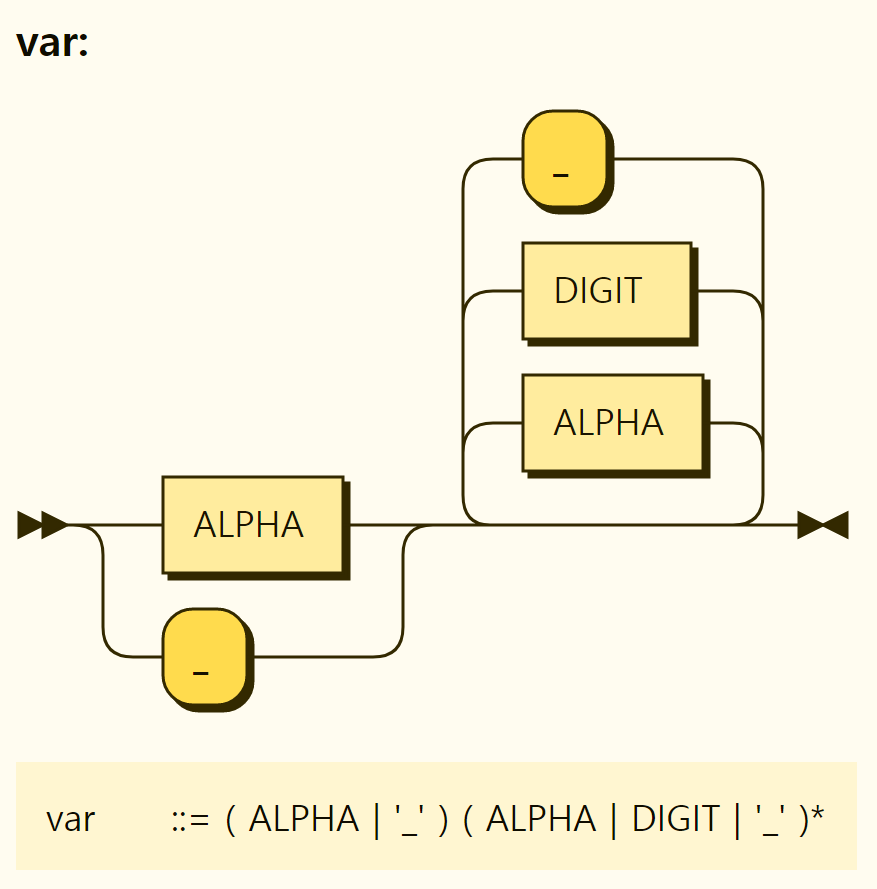
Figure 3-22. Format of variable names
Let's actually check out the concept of variables. Run opa run to run REPL, then enter the following input line by line.
a := [1,2,3]
a[b] == 1
a[c] == 5
Running a: = [1,2,3] assigns an array consisting of 1,2,3 to a.
> a := [1,2,3]
Rule 'a' defined in package repl. Type 'show' to see rules.
Next, enter an expression with a[b] == 1 to find the value of b that can make that expression true. b is used as the index for the array, the first entry is 1 and the index starts at 0.
> a[b] == 1
+---+
| b |
+---+
| 0 |
+---+
Next, let's enter an expression with a[c] == 5. Since a does not have 5 as an item, no c can be found to satisfy that expression. Thus c becomes undefined as expected.
> a[c] == 5
undefined
Note that variables described in sections [Introduction/Rego/Variables] (https://www.openpolicyagent.org/docs/latest/#variables) and [Policy Language/Variables] (https://www.openpolicyagent.org/docs/latest/policy-language/#variables) of the OPA Official document are described from different perspectives, which can be confusing. In this book, we tried to interpret the contents of the two parts as much as possible so that the reader could understand them best, but if the description of the relevant part of the official document is rewritten more clearly in the future, the interpretation may change, so we recommend you to check it once more.
Reference
References provide a means of accessing the hierarchical structure when variables, arrays, objects, function call results, etc. have hierarchical structure, as shown in Figure 3-23.
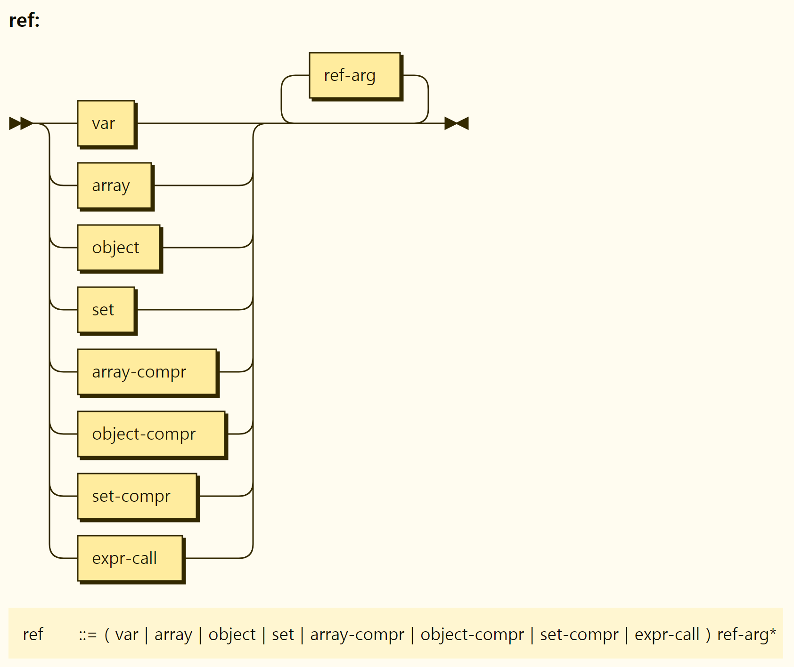
Figure 3-23. Structure of the reference
The things that can be the top hierarchies of references are variables, arrays, objects, sets and array comprehension, object comprehension, set comprehension, and function calls, as shown in Figure 3-23. Comprehensions and function calls are not references to the representation itself, but references to arrays, objects, sets, etc. produced as a result of the representation. Once the top-level reference target is determined, the child element can be referenced via a reference argument. In addition, if the referenced child element has a child element again (e.g., an object is specified again for a particular key of the object), it can be accessed again through a reference argument.
The reference argument can access the sub-elements of the target through two methods, using . and naming variables between [ ], as shown in Figure 3-24.
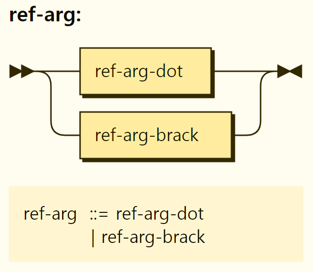
Figure 3-24. Structure of the reference argument
The approach using . is shown in Figure 3-25. It can then be referenced via a key that satisfies the variable name format.
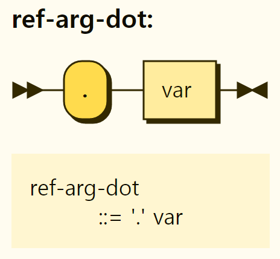
Figure 3-25. Reference using .
Approaches using [ ] are referenced using scalar values, variables, arrays, objects, sets, and _ between [ ], as shown in Figure 3-26.
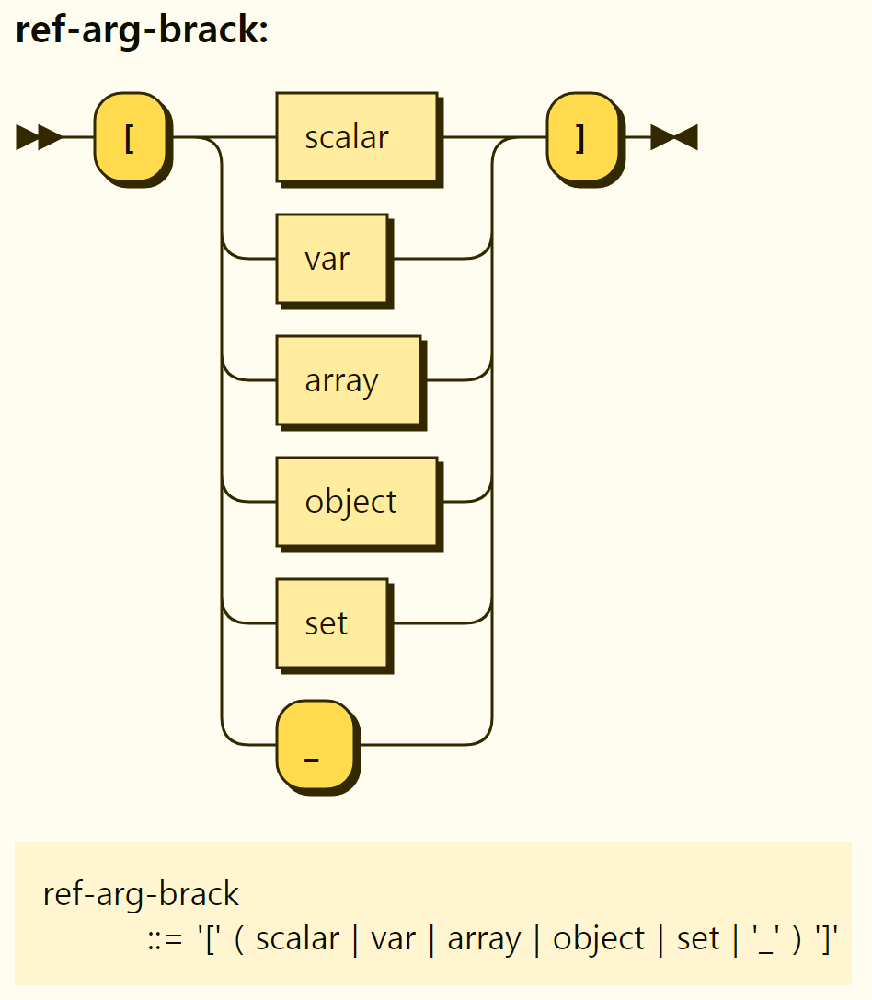
Figure 3-26. Reference using [ ]
Let's look at an example of a reference. First, the array can be referenced using [], giving an index starting from zero between [].
fruits := [“apple”, “banana”, “pineapple”]
# “banana”
furits[1]
For a set, both references using [] and references using . are possible. However, if strings, etc. contain – characters, be aware of references using . are sometimes not possible.
encoding := {"utf-8", "euc-kr", "cp949"}
# “"utf-8"
encoding["utf-8"]
# “cp949”
encoding.cp949
# 1 error occurred: 1:1: rego_type_error: minus: invalid argument(s)
encoding.utf-8
An object is similar to a set, but returns a value corresponding to the key.
bob := {"name":"bob", "age":50, "point":1000}
# 50
bob.age
# 1000
bob["point"]
In addition, hierarchical structures such as including objects again as values within objects can be accessed sequentially through references.
bob := {"name":"bob", "age":50, "membership": {"point":1000, "coupon":["50percentdc", "1000wondc"]} }
# 1000
bob.membership.point
# "50percentdc“
bob.membership["coupon"][0]
# { "coupon": [ "50percentdc", "1000wondc" ], "point": 1000 }
bob["membership"]
# 1000
bob["membership"]["point"]
Iteration
The form
For example, in the following example, the fruitindex rule finds "apple" in the fruit array and returns the index. Enter the example below in REPL and enter fruitindex to return 0. This is because if a variable that meets the conditions exists while iterating the array, it is stored in the index variable, and if the rule is satisfied, the index is assigned to the rule.
fruits := ["apple", "banana", "pineapple"]
fruitindex = index { fruits[index] == "apple" }
However, if the index is not needed and only checked for existence, it would not be necessary to store the index in the index variable, but it would still require an iteration. In this case, [_] allows index variables to be traversed without saving them.
The following example is a rule that does not locate an index, but only checks its existence. Enter in REPL and enter fruitxists to return true.
fruits := ["apple", "banana", "pineapple"]
fruitexists = true { fruits[_] == "apple" }
Rule
It is no exaggeration to say that the declaration of rules is everything of Rego. Rules vary from rules that assign values directly to them, rules that assign values if the content of the rule body is true, rules that assign part of the rule's evaluation value, and final evaluation values define them as sets or objects, and functions that modularize the rule.
The structure of the rules is shown in Figure 3-27. At the beginning of the rule, the default keyword is optionally placed, and a rule head exists. There may be several rule bodies behind the rule head, and no rule body may exist. Rules, such as value assignment and function, are separated by the form of the rule head, which is described in detail by examining by rule form.
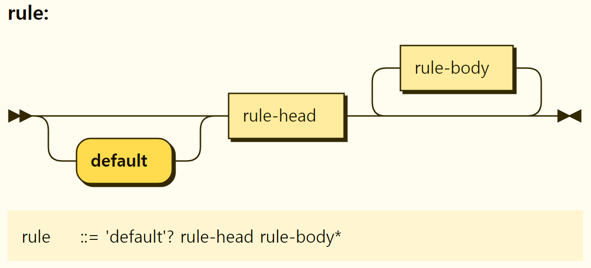
Figure 3-27. Structure of the rule
Value Assignment
The most basic rule of the Rego language is assignment of values and has the structure shown in Figure 3-28. Value assignment is similar to constant declaration in other languages. It makes certain values easier to read elsewhere, such as naming 3.14 pi.
Value assignment is a form of rule in which only rule heads exist without the default keyword and rule body. Value allocation has a syntax of
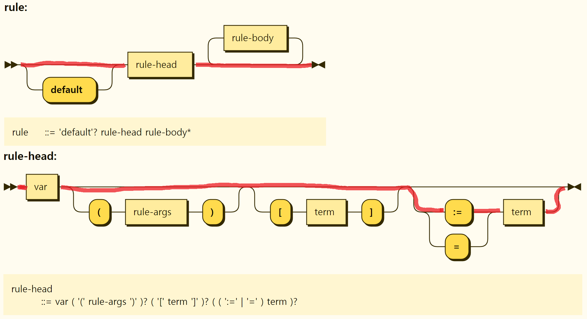
Figure 3-28. Structure of the value assignment
A term that can be a value(right-hand side) of a value assignment can be a scalar value, an array, a set, an object, etc., or a comprehension that simply represents a composite value. In addition, the type of value is not specified separately and is automatically inferred.
Properties of Value Assignment
By default, multiple assignments of the same value result in an error in the rego file. In REPL, on the other hand, re-assigning values overwrites previous values. First, write the following code and save it as badassign.rego.
If you have saved the code, let's run the following command. opa run is a command that executes REPL, with parameters specifies rego files or JSON data files to load when REPL is run, reads and preloads them during REPL operation. As a result of execution, the part where a:=5 is written prints an error that the rule a has been re-declared.
$ opa run badassign.rego
error: compile error: 1 error occurred: test.rego:3: rego_type_error: rule named a redeclared at test.rego:6
When using a value assignment rule, we notice that it cannot be redeclared with the same name.
This time, let's run REPL without a rego file. When the REPL is executed and the > prompt appears, enter a:= 3, b:= 4, a:= 5 sequentially.
$ opa run
OPA 0.19.2 (commit 40f9c1fe, built at 2020-04-27T22:51:13Z)
Run 'help' to see a list of commands.
> a := 3
Rule 'a' defined in package repl. Type 'show' to see Rules.
> b := 4
Rule 'b' defined in package repl. Type 'show' to see Rules.
> a := 5
Rule 'a' re-defined in package repl. Type 'show' to see Rules.
> show
package repl
b := 4
a := 5
>
Unlike when loading files, the rule a is redefined. If REPL does not allow redefinition, it will not be able to correct mistakes without re-defining them from scratch when entered by mistake. Remember that value allocation rules cannot be reallocated for the same name because in normal situations with OPA, the rego file will be loaded into the REST server or the go client library.
Complete Rule
The aforementioned value assignments only assign values and do not result in policy evaluation. Let's look at the rules by which policy evaluation takes place other than assignment of values. A rule in which a value is set according to the satisfaction of the rule phrases is called the complete rule in OPA, and a rule that allows parts of the rule to be reused using variables is called the partial rule.
If you look at OPA-related documents, you will see many of the following types of rules.
<rule name> {
<rule literal 1>
<rule literal 2>
...
<rule literal n>
}
This form of rule is abbreviated to the following form.
<rule name> = true {
<rule literal 1>
<rule literal 2>
...
<rule literal n>
}
The regularized form of a rule is as follows, and the above two forms are particularly true when the rule is true.
<rule name> = <rule value> {
<rule literal 1>
<rule literal 2>
...
<rule literal n>
}
The
If we look at the structure of the complete rules we have looked at so far, it is shown in Figure 3-29.
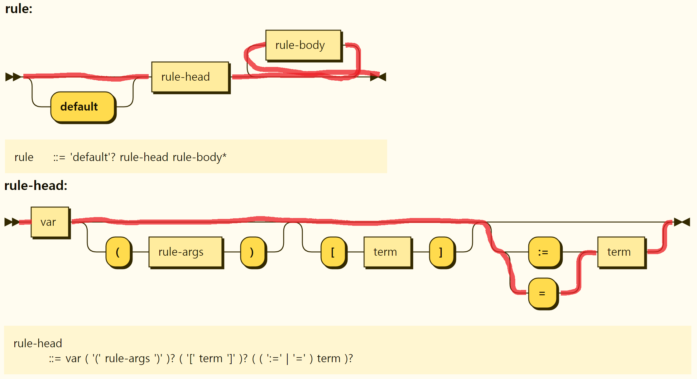
Figure 3-29. Structure of the complete rule
A complete rule has a rule body, and the structure of the rule body is shown in Figure 3-30.
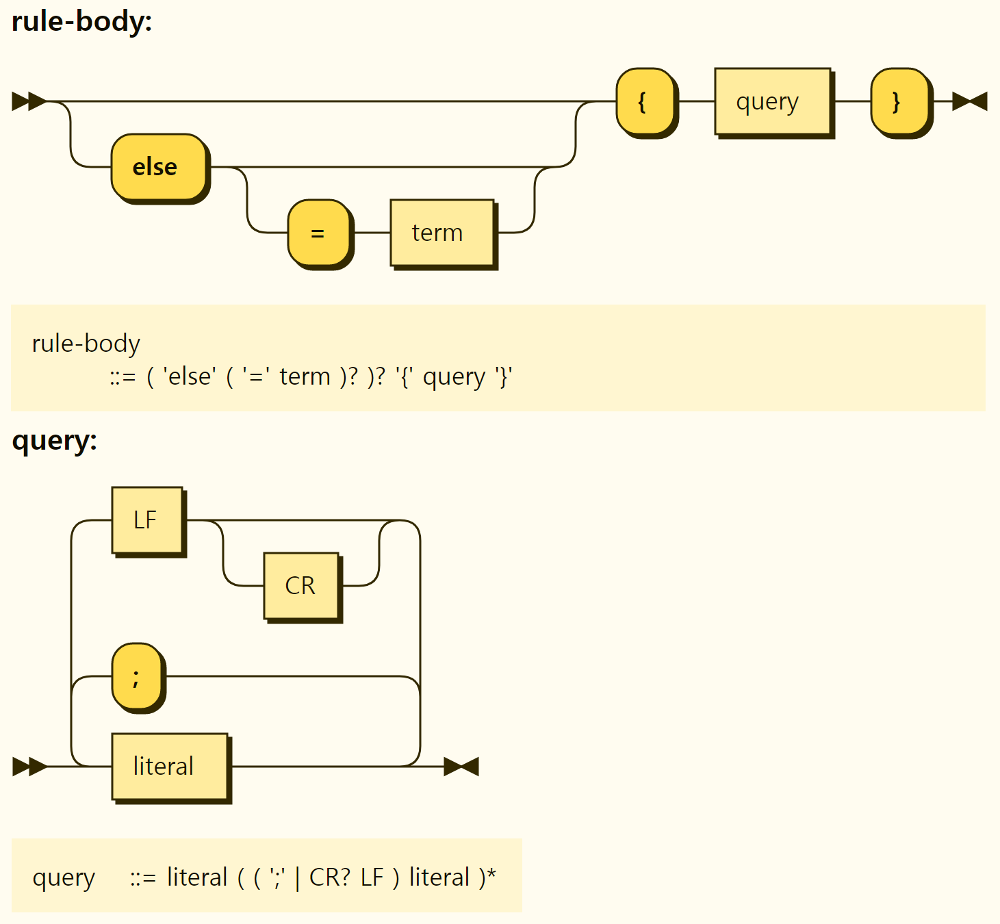
Figure 3-30. Structure of the rule bodies
The front part of the rule body can have optional else statements, and essentially a single query block surrounded by {}. In addition, the query part is repeated with more than 0 literals, which are separated by semicolon (;) or line-changing open characters (\n or \r\n depending on the platform). In other words, if you want to express multiple literals in a line, you can separate them into semicolons, and if you divide them into lines, they are recognized as multiple literals. When expressed in multiple lines and finished with a semicolon, it is the same as adding an empty line, so nothing changes in the code. Therefore, the following three forms are identical in content. Literals are later described with operators.
{
<rule literal 1>; <rule literal 2>; ...
}
{
<rule literal 1>
<rule literal 2>
...
}
{
<rule literal 1>;
<rule literal 2>;
...
}
Unlike assignment of values, there can be several rules with the same rule name, which are called Rule Sets, and if any of the rules that make up the rule set are satisfied, they are assigned to that value. A rule set can be incrementally defined by adding a new rule of the same name to an existing rule set. If multiple rules of the same name are declared, only one of them needs to be satisfied, so it can also be seen as an OR relationship. In addition, if the rules in the rule set are complete rules described in this section, the result value of rules cannot be specified differently.
<rule name> = <rule value> {
<rule literal 1>
<rule literal 2>
...
}
<rule name> = <rule value> {
<rule literal 3>
<rule literal 4>
...
}
If multiple rule bodies are declared in one
<rule name> = <rule value> {
<rule literal 1>
<rule literal 2>
...
} {
<rule literal 3>
<rule literal 4>
...
}
Else Statement
Connecting multiple rule bodies with an else statement allows you to write a rule to check the conditions on the next body when the conditions on the first body are not satisfied. The grammar of a rule using an else statement can be expressed as follows.
<rule name> = <rule value> {
<rule literal 1>
<rule literal 2>
...
} else = <rule value2> {
<rule literal 3>
<rule literal 4>
...
} else = <rule value3> {
<rule literal 5>
<rule literal 6>
...
}
...
Unlike a rule set, if multiple rule bodies are linked by an else statement, the conditions of the first rule body are not satisfied, then the conditions of the next rule body are checked. You can also specify a value to assign to a rule when its body is satisfied in the form else =
If you look at the case where the else statement appears in the previous figure, it is grammatically possible to use only else, not in the form else =
<rule name> = {
<rule literal 1>
<rule literal 2>
...
} else {
<rule literal 3>
<rule literal 4>
...
}
Let's run REPL and enter the following code. The code declares a rule called elstest, in which elstest is assigned 1 if count("apple") == 3. Then, if the else statement does not satisfy the first time, assign 2 to the rule if the else statement satisfies count("apple") == 5. By entering elstest, the value of that condition can be similarly imitated by an if or switch statement in a general-purpose programming language, especially when creating a function.
> elstest = 1 { count("apple") == 3 } else = 2 { count("apple") == 5}
> elstest
2
Default Statements
By default, when a rule satisfies its literals in the rule body, the value of the rule name is assigned to the specified value. If the rule body is not satisfied, it is undefined, in which case the default value is assigned if the default value is specified. The default statement is used to specify the default value, which is also a form of rule. The default statement does not necessarily have the same value type as other rules with the same name, but it is recommended to use the same type to reduce errors. A default statement has the following form:
default <rule name> = <value>
The structure of the default statement is shown in Figure 3-31.
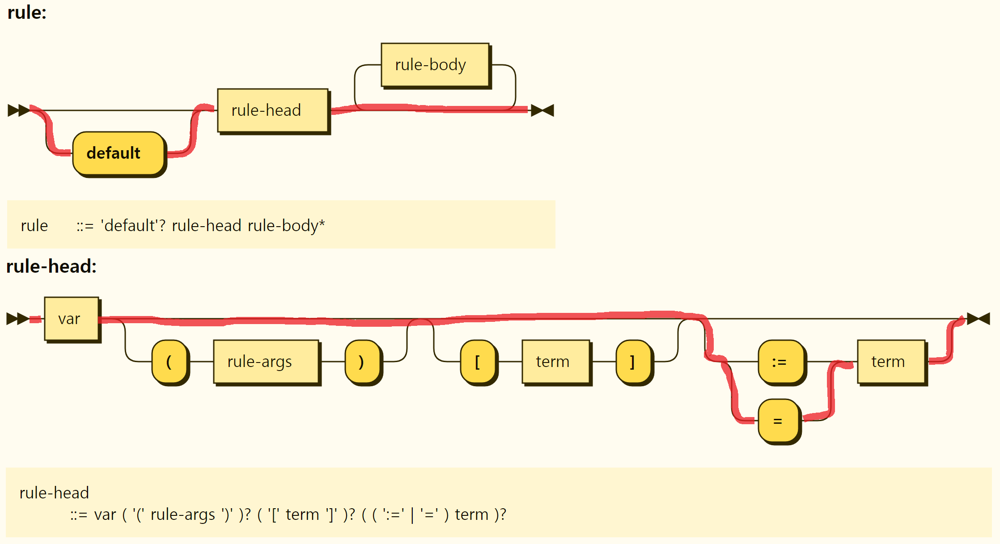
Figure 3-31. Structure of default statement
Examples of Rules
Let's look at an example of a rule. The allow rule defined in the following has a default value of false. The first rule is that if input has a role value of "admin", allow becomes true. The second rule is true if both values are true if the input's roll value is "user" and the input's has_permission value is true at the same time.
default allow = false
allow = true {
input.role == “admin”
}
allow = true {
input.role == “user”
input.has_permission == true
}
Let's change the code above from allow = true to allow = 1 as follows. That way, it becomes the following code.
default allow = false
allow = 1 {
input.role == “admin”
}
allow = 1 {
input.role == “user”
input.has_permission == true
}
If input.role is "admin" or input.role is "user" and input.has_permission is true at the same time, then allow is evaluated as 1 rather than true. The default is not changed, so if neither rule is satisfied, then allow = false. We can see that the default of the rule and the evaluation value allocated upon successful evaluation do not necessarily have to be of the same type, and that the rule is different from the variables, etc
If one of the two rules is changed to allow = 1 and the other is left to allow = true, the following error occurs during the actual evaluation.
eval_conflict_error: complete rules must not produce multiple outputs
Partial Rule
A Partial Rule is a rule that assigns values that conform to the rules set in the rule body to a variable as a set or object. Since objects can also be viewed as a set of
After the rule name in the variable name format, there is a base element surrounded by [], which results in a set of basic elements that make the rule body true.
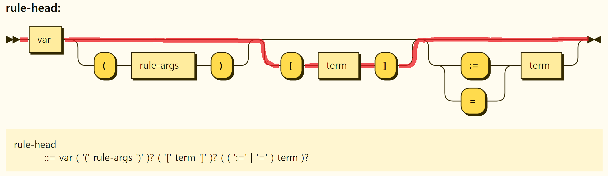
Figure 3-32. Rule head structure for partial rules that generate sets
Let's look at an example of a partial rule that generates a set. Let's enter the nonapplefruits into REPL that define a set of the nonapplefruits in the fruit array as follows. Then you can see the expected result.
> fruits :=["apple","banana", "pineapple"]
Rule 'fruits' defined in package repl. Type 'show' to see rules.
> nonapplefruits[fruit] { fruit := fruits[_]; fruit != "apple" }
Rule 'nonapplefruits' defined in package repl. Type 'show' to see rules.
> nonapplefruits
[
"banana",
"pineapple"
]
Partial rules that create objects have rule heads as shown in Figure 3-33. We can see that the =
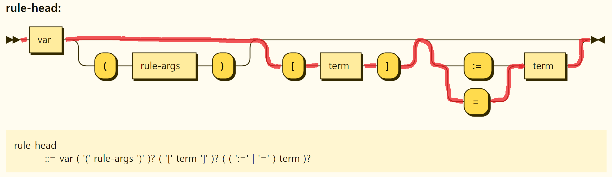
Figure 3-33. Rule head structure of partial rules that create objects
Let's look at an example of a rule that creates an object. We defined an object called bob, which has properties such as age, height, and weight. We define bobwithoutage to create a new object that removes the age part of Bob's attribute. If you enter it as it is in REPL, you can see that it works as you expected.
> bob := { "age":30, "height":180, "weight":100}
Rule 'bob' defined in package repl. Type 'show' to see rules.
> bobwithoutage[key] = val { val := bob[key]; key != "age" }
Rule 'bobwithoutage' defined in package repl. Type 'show' to see rules.
> bobwithoutage
{
"height": 180,
"weight": 100
}
Fuction
A function is also a type of rule, and it has the following form.
<rule name> ( <argument>, ... ) = <variable to return> {
<rule literal 1>
<rule literal 2>
...
}
Since the function is also a rule, the structure of the rule body is the same as the other rules, and the structure of the rule head is shown in Figure 3-34. Grammatical features alone suggest that a rule has a list of rule arguments separated by , surrounded by a variable name format function name followed by ( ). A function without any rule factor is also possible, which is also expressed as ( ).
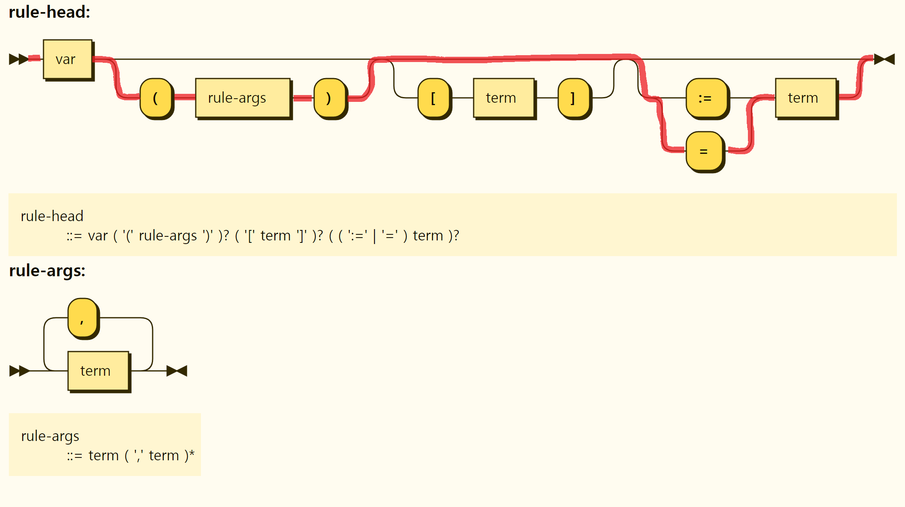
Figure 3-34. Rule head structure of the function
Let's define a function and use it. In VSCode, enter the following code and save it with the desired name such as function.rego.
Briefly explain the code above as follows. First, we declared a package called function. The function is then declared with the name "multiple" and returns the value assigned to the variable "m" by accepting "a" and "b" as factors. The text simply returns two arguments a and b multiplied.
We then declare two rules, result1, and result2, to verify that the function is functioning properly. result1 calls the multiply function 3 and 4 as arguments and declares that the resulting value is defined as r. result2 is the same as result1, except for changing the arguments to 3 and 9.
Let's check if the function you wrote works properly. Enter [Ctrl + Shift + P] (Cmd + Shift + P on Mac OS) and select [OPA: Evaluate Package] to evaluate the value. The results are as follows
// Evaluated package in 999.4µs.
{
"result1": 12,
"result2": 27
}
Next, let's look at how a function behaves when the number of arguments is incorrect or when an invalid argument is passed that does not support multiplication. Let's add result3, result4, enter [Ctrl + Shift + P] (Cmd + Shift + P on Mac OS) and select [OPA: Evaluate Package] to evaluate the value.
result3 = r {
r := multiply(4,6,7)
}
result4 = r {
r := multiply("23",5)
}
When trying to perform the evaluation, the following errors occur:
function.rego:16: rego_type_error: data.function.multiply: too many arguments
function.rego:20: rego_type_error: data.function.multiply: invalid argument(s)
As an argument in a function, you can use values directly as well as variables. Save the following code as function2.rego and evaluate it.
The result will be as follows.
// Evaluated package in 0µs.
{
"testrule": 1
}
If values are directly used as arguments, lookup tables and others can be implemented. However, there is a caveat: if a function is performed with the same name several times, there is no problem if only values exist at the same argument location, but if values and variables are mixed, problems arise. For example, a problem arises when one of the two functions with the same name receives a value and one receives a variable.
Literals
A look at the structure of the literal used to write rules in the rule body is shown in Figure 3-35.
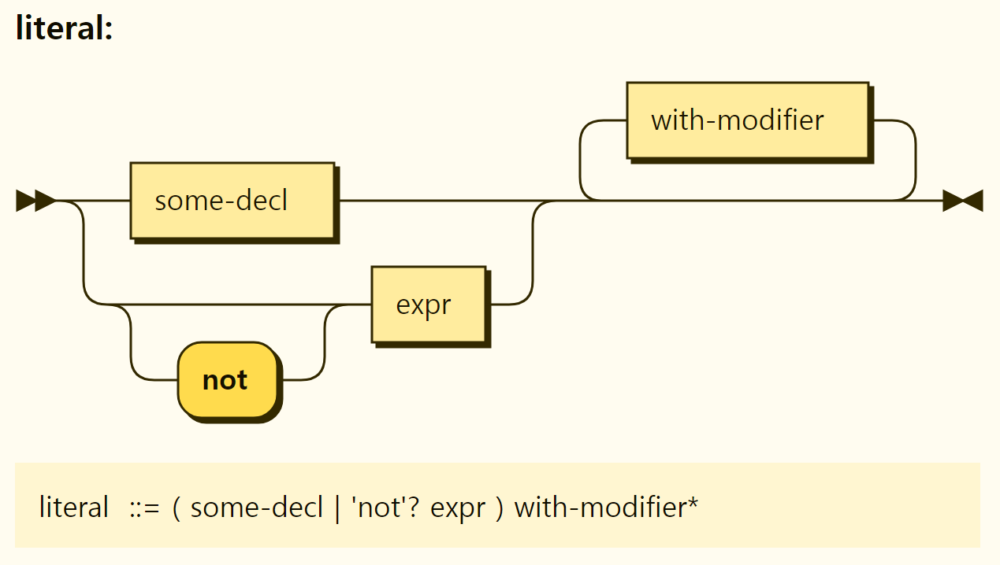
Figure 3-35. Structure of the literals
literal can be a "some" statement or expression, and expressions can optionally have a "not" in front or a "with" statement in tail. Grammarly, it seems that a "some" door can also be attached to a "some" statement, but a "some" statement doesn't mean much.
Some Statement
Some statements are used to explicitly declare variables that are used locally within the rule body. It is used to clarify that a variable is a local variable, regardless of the existence of an external variable, because if it is not clarified that the statement is a local variable, then an external variable can be referenced if there is a variable with the same name outside the rule. Therefore, it is always recommended to declare a local variable as a "some" statement unless it is clearly: = value allocation (the local variable on the left side is declared at the same time as the value allocation).
The structure of some statement is shown in Figure 3-36. The "some" statement declares a comma-separated list of variable names after the "some" keyword. Since variables with that name are declarations of local variables, there is no particular complexity.
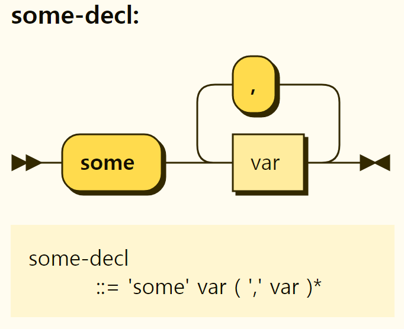
Figure 3-36. Structure of some statements
Let's look at an example of using some statements.
find_apple = index {
some index
fruits[index] == “apple”
}
In the example, the rule find_apple is declared, and if the rule is satisfied, the variable index is returned. Then, if the local variable index is declared and the value "apple" is satisfied in an array called fruits, the index is placed in the index variable. In the example above, it works the same even if some index lines are excluded as follows.
find_apple = index {
fruits[index] == “apple”
}
But what if the index is already defined outside as follows?
index := 1000
find_apple = index {
fruits[index] == “apple”
}
When tested in REPL, the value of find_apple is undefined. Since the index is declared, the evaluation results are false and the rule undefined because the variable index satisfying fruits[index] == "apple" is evaluated without finding the variable index satisfying fruits[1000] == "apple". Thus, local variables should always be declared "some" to prevent them from behaving differently because a variable with the same name exists externally.
With Statement
The with statement is used in the syntax to override input or data with specific data. The with statement is usually used when writing unit tests, and its structure is shown in Figure 3-37.
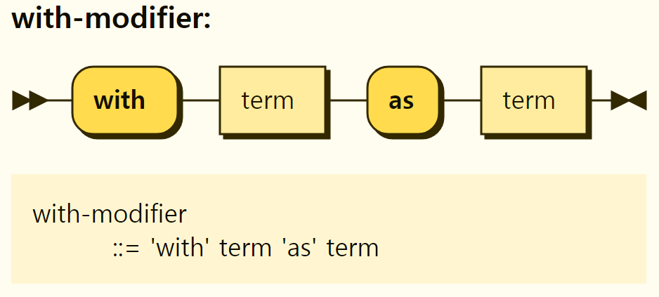
Figure 3-37. Structure of with statements
The OPA official document warns that if a statement is used with data, it should not be used with subparts of data created as virtual documents by partial rules.
Examples of use of statements are as follows.
input.role == “admin” == with input as { ”role“:”admin“, ”id“: ”1133“ }
The with statement will be examined in more detail when writing test codes in later chapters.
Expression
The structure of the expression is shown in Figure 3-38. An expression can be a term, a function call, or an expression containing an infix operator.
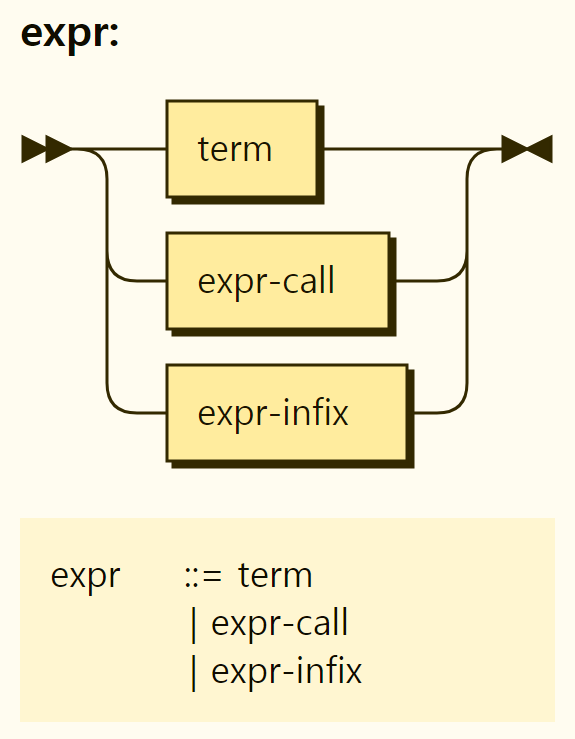
Figure 3-38. Structure of the expression
Let's look at the expression for function call, since we've already looked at the term earlier. The structure of the expression for function is shown in Figure 3-39. As expected, it is in the form of a function name (an argument of the term, ...).
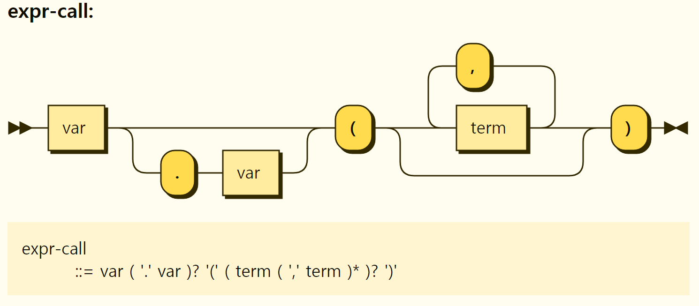
Figure 3-39. Structure of the expression of function call
In grammar, a function name is represented as such that only one . can be added between the variable name formats, which in fact appear to be an error in grammar as a function name separated by several .. The OPA official document also recommends distinguishing names from functions in other modules, such as org.example.special_func, to avoid name conflicts when defining functions to be used by other modules.
An example of a function call is as follows:
contains(fruits, “banana”)
glob.match("*:github:com", [":"], "api:github:com")
org.example.special_func()
Not Statement
A not statement is a statement that negates the result of an expression. If the expression compared with the == operator is negated, it is equivalent to the comparison with the != operator. Therefore, the following two expressions are identical:
not "hello" == "world“
“hello” != “world”
For another example, define a rule that corresponds to the negation of a particular rule. Suppose there is a rule to check whether the following fruit array contains "apple".
default appleinfruits == false
fruits := ["apple","banana", "pineapple"]
appleinfruits { fruit = fruits[_]; fruit == "apple" }
So how can we define a rule that checks if "apple" is not in the fruits array? Let's define it using the not statement. At first glance, it looks like we can do it like this.
default wrongapplenotinfruits == false
fruits := ["apple","banana", "pineapple"]
wrongapplenotinfruits { fruit = fruits[_]; not fruit == "apple" }
However, if you type in REPL, "apple" exists in the fruit array, so it is expected to be false, but it is true. If you look closely at this rule, we put fruits in the fruit variable as we traverse them, and continue to compare "apple" with the fruit variable. The rule body has become true because there are cases in the iteration that satisfy not fruit == "apple" in the rule body. In other words, the use of not statements on the iteration may behave differently than expected, so caution is needed.
Invoking another rule with a not statement on the rule body, such as the following, yields the intended result.
default applenotinfruits == false
applenotinfruits { not appleinfruits }
Expression with Infix Operator
The expression with infix operator is in the form of
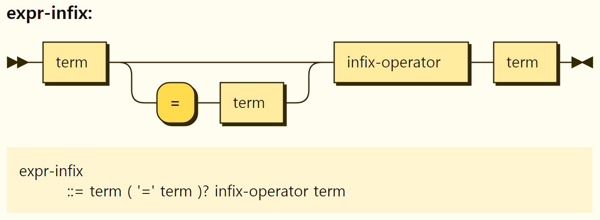
Figure 3-40. Structure of the infix operator expression
In Rego, there exists three infix operators: comparison operators, arithmetic operators, and set operators, as shown in Figure 3-41. A bin-operator may seem like an operator for logic, but it is actually an operator for a set.
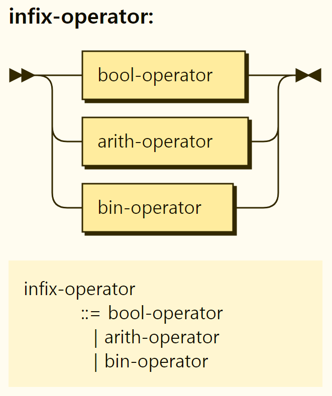
Figure 3-41. Structure of the infix operator
The structure of the comparison operators is shown in Figure 3-42, and each operator is briefly described in Table 3-1.The result of the comparison operator is true or false.
| Operator | Description |
|---|---|
| == | a == b is true if a and b have the same values, false if not |
| != | a != b is true if a != b and b are not equal, false if they are equal |
| < | a < b is true if a is less than b, false if greater than or equal to b |
| > | a > b is true if a is greater than b, false if less than or equal to b |
| >= | a >= b is true if a is greater than or equal to b, false if less than b |
| <= | a <= b is true if a is less than or equal to b, false if larger |
Table 3-1. Rego Comparison Operators
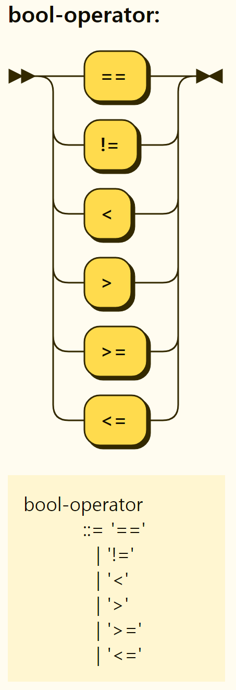
Figure 3-42. Structure of comparison operators
The types of arithmetic operators are shown in Figure 3-43. Like a typical programming language, +, -, *, / means addition, subtraction, multiplication, and division, respectively. The % operator that obtains the remainder, commonly called the modulo operator, is not represented in the grammar, but exists
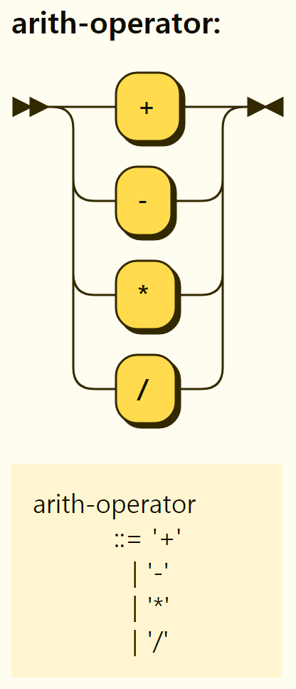
Figure 3-43. Structure of arithmetic operators
Set Operator
The structure of the set operator is shown in Figure 3-44, and supports intersection (&) and join (|) operations. It is not grammatically indicated, but a minus(-) operator for set is also available.
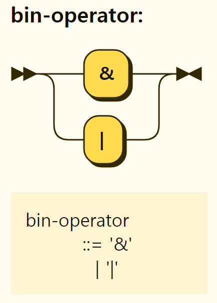
Figure 3-44. Structure of the set operator
Let's test the set operators. The expected results can be seen by typing in REPL as follows..
> {1,2,3} & {1,2}
[
1,
2
]
> {1,2,3} | {1,2}
[
1,
2,
3
]
> {1,2,3} - {1,2}
[
3
]
Equality Operator
Rego has three operators related to equality: := (assignment), == (comparison), and = (unification). Allocation and comparison can only be used within a rule or in REPL, and the unification operator can be used in all cases. Let's first look at the difference between each.
Assignment Operator
The allocation operator (:=) is the operator used to allocate values. When a value assignment is performed, a variable is created and a value is assigned. If you attempt to assign a value to the same variable (a variable with the same name) again, an error occurs.
Comparison Operator
A comparison operator (==) is an operator whose values are the same. In addition to simple scalar values, complex values, and other values such as variables can be compared.
Unification Operator
A unification operator (=) is an operator that performs comparison and assignment simultaneously. Both operands behave the same as comparison operators if they are not variables, and if there are variables among them, they behave like assignment operators.
Examples of the same results for assignment operators and unification operators are shown below. Both of the following lines create a variable called a and assign a value of 3.
a := 3
a = 3
Let's also look at examples of the same comparison and unification operators, and both of the following lines return true..
3 == 3
3 = 3
The OPA official document describes the assignment operator and the comparison operator as grammatical sugar for the unification operator. Eventually, assignment operators and comparison operators are replaced by unification operators and compiled. However, the compiler encourages the use of high readability assignment operators and comparison operators over unification operators as error messages are clearer and can reduce confusion.
However, since assignment operators and comparison operators can only be used within the rule body in more detail, there are many cases where unification operators such as default statements or rule heads are inevitable. Therefore, it seems appropriate to remember that it is good to use assignment operators and comparison operators if possible inside the rule body.
Comment
Lines that start with # letters are treated as comments to the end of the line. Blockwise annotations using / / are not supported, such as languages such as C++ and Java.
Examples of comments are as follows:
# default vaule for rule allowed
# prevents allowed remains undefined
default allowed = false
Reserved Name
Reserved names that cannot be utilized for reference using variable names, rule names, or reference using dot.
as
default
else
false
import
package
not
null
true
with
Where is main?
Other common programming languages use the main function as the starting point, but does Rego correspond to the main function? The answer to this is that Rego, like SQL, works by returning a response to a query when querying data, so there is no special starting point. Rego reads and stores data (JSON format) and policies (rego files) and returns a response to the query when the user performs the query.
Summary
In this chapter, we examined the language used by OPA to describe policy in detail, Rego. We visualize Rego's grammar as a railroad diagram, and also explore situations and examples of using real grammar. We also describe some examples of real-world behavior with minor errors or omissions in grammar when using real Rego.
The contents of this chapter are those that will continue to be referenced rather than read once. It will be helpful to check the policies written in Rego again when they behave differently than you think or encounter unknown errors.
For readers who want to find other explanatory material about Rego, please visit Torin Sandall's OPA deep dive slide at https://www.slideshare.net/TorinSandall/rego-deep-dive.
Next chapter deals with the various built-in functions provided by Rego, which are frequently used.